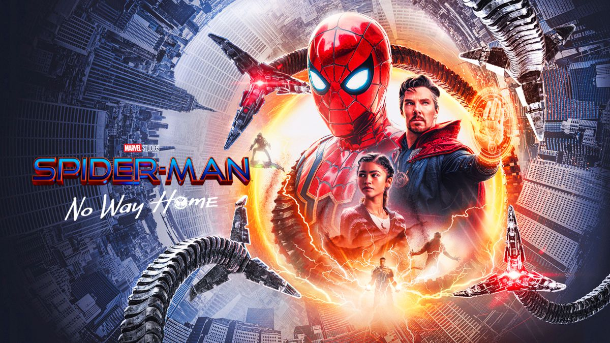

THE BATMAN
A lo largo de los meses, en las innumerables entrevistas, una y otra vez hemos escuchado a Matt Reeves repetir que su Bruce Wayne está inspirado en Kurt Cobain, específicamente en la versión ficcionada de la película Last Days de Gus Van Sant. También ha mencionado que en la confección de The Batman tuvo presentes varios filmes setenteros, representados por Contacto en Francia y Todos los Hombres del Presidente, entre otras cintas en las que vemos ya sea persecuciones en autos o la indagación en enormes tramas criminales y políticas.
UNCHARTED
'Uncharted' no es una saga cualquiera en la historia de los videojuegos.Como su compañera de compañía, la siempre genial Naughty Dog, The Last of Us (que muy pronto se convertirá en serie), 'Uncharted' es uno de esos videojuegos con tal calidad y excelencia narrativa que muchas películas de gran presupuesto no alcanzan el nivel cinematográfico de estos videojuegos. Tanto sus escenas de gameplay como sus cinemáticas dan, entretienen y emocionan como las mejores películas de aventuras. Por eso, saltar al cine parecía un paso tan obvio como arriesgado. Sí, porque al contrario que con, por ejemplo, 'Arcane: League of Legends' o 'Sonic', aquí, más que adaptar el universo de un videojuego a la pantalla, se trata de un salto similar al de una cinta de animación a una Live-Action. Nathan Drake o Victor Sullivan ya estaban vivitos y coleando en la mente de millones de jugadores.
SPIDERMAN-NO WAY HOME
El hombre araña se entera de que su identidad ha sido expuesta por Mysterio (como se vio al final de la segunda película). No obstante, ahora debe hacerle frente a las consecuencias. Él, sus amigos y su tía son investigados por el gobierno, además de que la división de la opinión pública y sus efectos negativos hace que ninguna universidad los acepte. Para remediarlo, Peter pide ayuda del doctor Strange, quien lanza un hechizo para que el mundo olvide lo ocurrido, pero, por intromisión de Parker, el hechizo resulta mal, desencadenando problemas entre las diferentes realidades: el multiverso. Villanos de los universos de las versiones cinematográficas anteriores de Spider-Man comienzan a aparecer en esta, por lo que ahora Peter debe reparar el daño que ha ocasionado.
